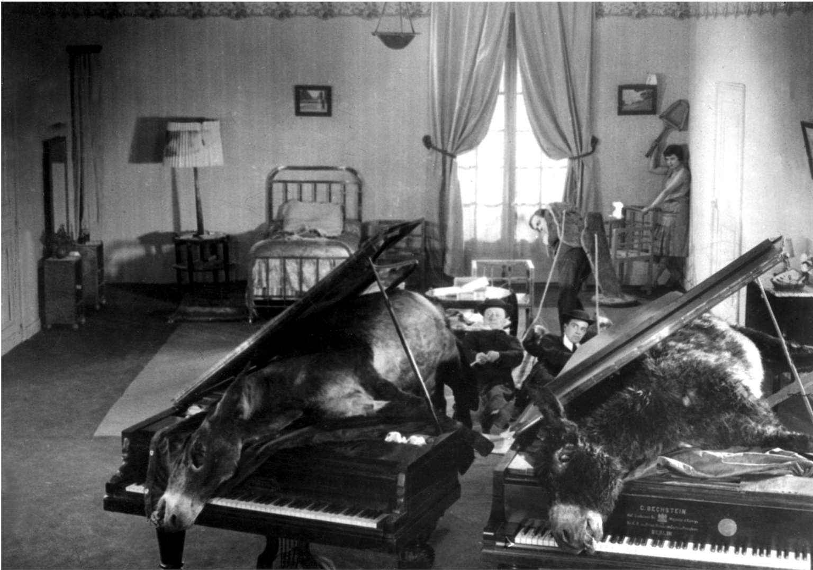
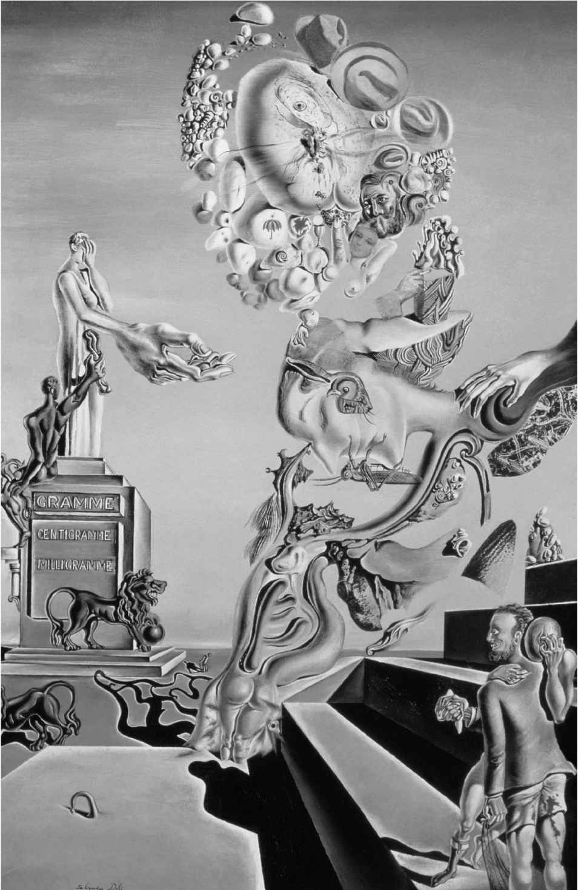
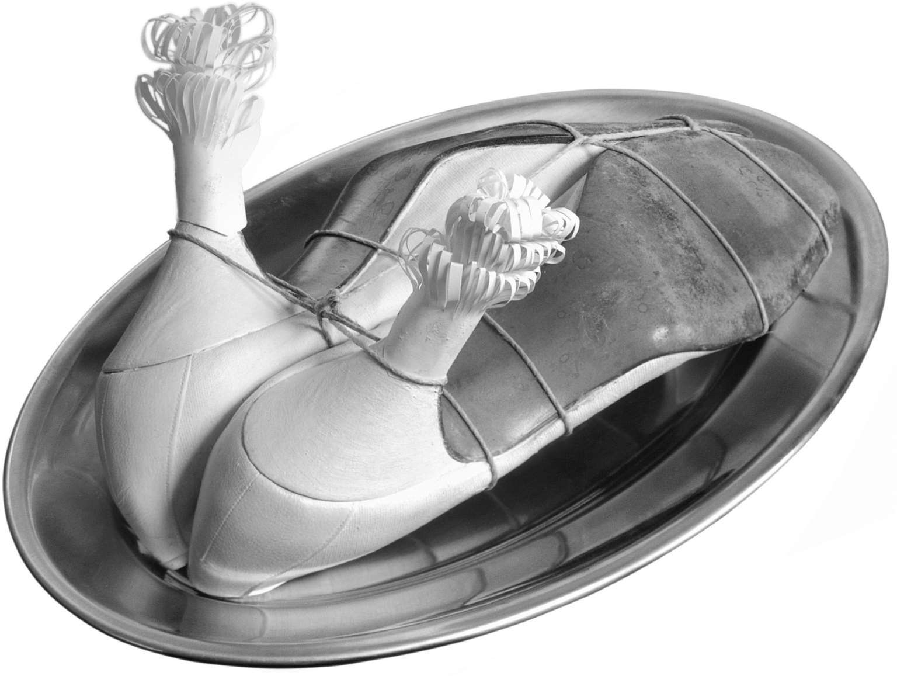

威廉·詹姆斯，《心理学原理》
（The Principles of Psychology，1890）
格奥尔格·齐美尔 [122] ，《大都市与精神生活》
（The Metropolis and Mental Life，1903）
弗吉尼亚·伍尔夫，《现代小说》
（Modern Fiction，1925）
主观视角：意识流
现代主义艺术的早期趋势是呈现主观经验，并前所未有地强调它的重要性。这一时期的重要艺术家继承了19世纪末的遗产，强调意象、象征主义、梦境和无意识的作用，总是偏爱个体的自我实现，更有甚者，还通过想象的、直觉的，以及我们将会看到的“显灵的”方法来接近真相，往往与更为理性或公开的辩论方式相悖相争。而这一考量也适用于所有艺术形式：既适用于德彪西的《佩利亚斯与梅丽桑德》 [123] 和理查德·施特劳斯的《厄勒克特拉》中克吕泰涅斯特拉的梦幻咏叹调，也适用于阿波利奈尔和艾略特的诗歌；既适用于戈特弗里德·贝恩的诗歌和勋伯格的《期待》与《月光小丑》中表现派的情感表达，也适用于追随梵高放弃局部色彩来表达情绪的野兽派画家；既适用于立体主义明显主观的视角，也适用于康定斯基的幻觉抽象。
现代主义依赖意象联想（人们常常认为它受到无意识的驱使）来运用“意识流”，这是所有艺术的基础。它旨在更忠实于私密的心理过程，往往带有柏格森所强调的特征，即关注我们对主观时间（durée）而非公共时间的体验的灵活性。在描述时，这种想法不服从以前被人们所理解的某种书面语言惯常的公开习俗。下文是乔伊斯笔下的利奥波德·布卢姆所想到的鱼：
《尤利西斯》的“塞壬”一章里也有一例，即一辆轻便二轮马车的铃铛声奇怪地让布卢姆烦躁不堪。我们可以推断出之所以如此，是因为这几乎让他回想起他和摩莉在开场的早餐一幕里，婚床上方悬挂的铜铃所发出的叮当声，以及当天下午，他的妻子摩莉和情人布莱泽斯·博伊兰在婚床上时，那些铜铃即将发出的声响。解读这些意象，并将其与我们对布卢姆的个性以及小说情节“如何进展？”的想法连贯起来，是我们身为读者的任务。这是技巧（关联，包括使用间接典故，以及没有明显的逻辑连接词）与思想的重要结合——笼统地说，这里的所谓思想就是一个白日梦一样的心理过程，特别是通过开口说话之前的想法表达出来的心理过程。这里涉及关于私密的新观念。布卢姆竭力不去想摩莉·布卢姆的不忠，但依然浮想联翩，他的意识流表达了他无论如何不会也不能大声说出来的东西（例如，在“瑙西卡”和“喀耳刻”诸章中他对女人的幻想，或是《喧哗与骚动》中的白痴班吉的想法）。
进步主义和自由化的效果显而易见——乔伊斯的布卢姆的确有一副迷人的“普通人的”头脑，斯蒂芬·迪达勒斯则有着惊人的创造力；而摩莉的思考不仅把我们带进她谈情说爱的情境中，还表达了她对博伊兰的态度，那显然不是她说出来的一部分，而是像很多现代主义作品那样，揭示了女人的性反应的方方面面，那是19世纪的小说中明显缺失的。
弗吉尼亚·伍尔夫曾明确指出，艺术家可借此为我们所有人实现一种心理现实主义的认知收获；这标志着一种观念上的转变，转而探索关于主观性的具体哲学思想，后者引发了20世纪自我观念的范式转换。伍尔夫写道，在现实主义小说中：
伍尔夫随后想象在一节火车车厢里，有一位H. G. 威尔斯 [126] 、约翰·高尔斯华绥或阿诺德·本内特 [127] 等人笔下的布朗太太坐在她对面。在她看来，这些作家“很有价值，当然也很有必要”，但他们的书“给人留下了如此奇怪的残缺和不满之感。为了完善它们，似乎有必要做点什么——加入某个协会，或者更迫切的做法是开一张支票”。她继而又描述了这三位小说家会如何单薄无力地描述布朗太太，而“记录布朗太太”乃是文学史下一章的标题；并且，“让我们再次预言，那一章将是最重要、最辉煌、最具划时代意义的章节之一”。伍尔夫本人在《雅各布之屋》（Jacob's Room ）及其后的小说中，就以焕然一新的、全非乔伊斯式的召唤意识的方式尝试了这种“记录”。她追求这种技巧的主要原因，是它把布朗太太表现得更真实，同时还能保留她内在的、相当普通的尊严（《达洛维夫人》中塞普蒂莫斯·史密斯的那些疯狂念头也是如此）。
对于现代环境下——尤其是城市里——私密经验的性质，音乐家、作家和画家有着共同的兴趣。从这个角度而言，我们必须把《荒原》看作是艾略特对自己在伦敦的性经验的私密性、忏悔性乃至神经错乱性质的探索。同样，当我们审视《尤利西斯》中布卢姆、摩莉和斯蒂芬对都柏林的不同反应，或福克纳的《喧哗与骚动》中的三兄弟，或达洛维夫人沿着皮卡迪里大街和邦德街行走时，也要对作为背景存在但很难说是有意识的专注思考的性质有所认识。我们感觉到自己不仅占据了另一个人的心灵（这可以唤起我们在道德和政治上意义重大的认同感和同情心），也能够欣赏特定的文化环境中个体的语言感受力的特性。外部因素并未缺席，但应该从个人的角度来观察它们，从而消弭和无视（或者实际上预先默认）一个可靠的作者的现实主义知识。但是，这些心理上的现实主义者所知的东西有所不同：
尊重个人的主观视角，并怀疑服从性和集体意识（如《尤利西斯》中那位公民的政治判断，以及《达洛维夫人》中布拉德肖大夫的专业医疗假设），这是现代主义的一个重要方面。很多重要的小说都在探讨某个具体意识的视角。乔伊斯的斯蒂芬、普鲁斯特的马塞尔、曼的汉斯·卡斯托尔普、伍尔夫的莉莉· 布里斯柯、阿尔弗雷德·德布林 [129] 的弗兰茨·毕勃科普夫、罗伯特·穆齐尔 [130] 的《没有个性的人》，等等。而华莱士·史蒂文斯、威廉·卡洛斯·威廉斯、W. B. 叶芝、T. S. 艾略特、莱纳·玛利亚·里尔克和戈特弗里德·贝恩等许多诗人也各自携带着各自时代的新认识论，画家，特别是从瓦西里·康定斯基到萨尔瓦多·达利和马克斯·恩斯特 [131] 这些无畏地坚持主观的画家，以及阿诺德·勋伯格和阿尔班·贝尔格等音乐家，也是如此。
这种对主观视角的分析日渐壮大，可见于柏格森的哲学、弗洛伊德的心理学，但对其最孜孜以求的，当属主观自恃的现代主义艺术；它们描绘了这种心理学，并追踪了富于表达或创造力的个人不断摆脱社会公认的信仰形式（像乔伊斯把自己描写为斯蒂芬·迪达勒斯），或给予读者一种对不同身份或异见身份的亲密感；而就我们阅读的政治来说，最有意思的是女人的这一切——如多萝西·理查森 [132] 庞大的意识流小说系列中的女主角、摩莉·布卢姆、达洛维夫人，以及莉莉·布里斯柯所表现的那样。
顿悟与幻象
这种模式中最值得一提的东西，可以跟着乔伊斯的叫法，称之为对顿悟体验的依赖。这可以大致定义为一种启示，它不是通过不着边际的思考得来，而是来自对某种全然独特之事的近距离的主观理解。当然，文学传统中不乏这类伏笔，比如在威廉·华兹华斯、杰拉尔德·曼利·霍普金斯和法国象征主义的笔下，以及从乔治·艾略特到约瑟夫·康拉德的作品。然而为这种日后成为现代主义艺术核心的心理过程命名的，却是乔伊斯。
这个论点还可以用于解释很多艺术和静物画的预期效果，也可以作为布卢姆茨伯里派“蕴意形式”观念的一个早期概要。但对文学顿悟更为关键的是一种更深层次的影响，一种深入现实本质的直觉，例如发生在乔伊斯、曼、伍尔夫、让–保罗·萨特等人身上的顿悟。乔伊斯倾向于将它看作一个审美超脱的心理学过程（源自沃尔特·佩特 [133] ），在此过程中，心灵“受到吸引”并“升华到欲望和憎恶之上”，而处于“与理智最理想的关系之中”
（这尤其适用于我们对蒙德里安那样的艺术的理解）。
然而，《一个青年艺术家的画像》一书中斯蒂芬的例子却是典型的康德式的，他审视一只寻常的篮子：“你沿着构成它的形式的线条，一点一点地看下去；你感受到在它的限度之内的各部分之间的平衡；你感觉到了它的结构的节奏”；它是一件东西。“你感知到它复杂、多层、可分、可离，是由许多部分组成的，而这许多部分和它们的总和又是和谐的。这就是和谐（consonantia）。”“一箭中的，”林奇“俏皮地”说。 [134]
伍尔夫给予了这种领悟一种重大得多却没有那么形式化的意义，她认为这件东西与外部世界之间的关系可能是有启示性的。
的确，它相当有用：
伍尔夫在这里所说的内容，反映了20世纪普遍存在的对哲学、宗教及整个意识形态的群体主张的怀疑论。构建经验的是个人——不是通过哲学或宗教，而是以一件艺术作品或一种叙事来赋予其连贯性。“自我”不是道德准则、美德与恶行——即外部视角——的一个活的纲要，而是始终维系着个人的“故事”。众多现代主义者所依赖的正是这种艺术秩序，它的效果虽然只是局部的，却往往极其强烈和广泛，普鲁斯特就是一例。
它支撑着《到灯塔去》中莉莉·布里斯柯最后的“幻象”。她正竭力完成一个含有“拉姆齐夫人和詹姆斯坐在台阶上”的画面。（但这部小说前半部分的中心人物拉姆齐夫人在此之前就已经去世了。）她随后关于人生的“启示”便精妙地维系了事物的性质、历史事件与赋予其秩序的艺术的性质之间的平衡。这正是绘画的目的，或许是，也或许不是，因为她在这里思考的不止是她的绘画：
当她透过窗子看到有人走进窗子后面的画室，担心这会弄乱她画面的构图时，她想：
艾略特的《四首四重奏》中的重要时刻——它诚然预设了正统的圣公会信仰的立场——旨在抓住这种以象征为中心且显然是审美的顿悟体验，很大一部分原因是诗人关于他所作之诗的语言有着非凡的自我意识，这种语言本身就是每一首“四重奏”最后一节的主题。因此，在“烧毁了的诺顿”的结尾：
这首诗有着清醒的自我意识，给处处是象征主旨的全诗的这种静止赋予了一种象征意义，让它有了神学观念的内涵，也就是这里关于上帝是一个“不动的动者”的观念。因此，这种关于艺术作品自主性的大有济慈风格的沉思也自有其深层的玄学意义。而这里对于形式和模式等观念的仰赖再次强烈地表明了抽象艺术由思考所引发的“蕴意形式”。这首诗还利用了音乐的非语言抽象——也就是其自身的诗意律动，且使用了一种音乐象征主义，它同样有着神学含义，却仍被看作植根于极为个人化的顿悟体验：
正如克默德 [139] 所说，这里最重要的是“把艺术作品看成审美单元，看成一种高于科学却不同于科学认知模式之产物的象征主义概念”。《四首四重奏》从很多方面来说都是斯特凡·马拉梅 [140] 想要写成的象征主义诗歌。
现代主义顿悟或许有些神秘，但它全然无须具备神学性质，让–保罗·萨特在写于1931-1936年、出版于1937年的《恶心》（La Nausée ）中就证明了这一点。和伍尔夫及艾略特一样，他也把艺术看作一种秩序的模型，这是通过他的叙述者、当地的历史学家安托万·罗冈丹的话表现出来的：“对，这就是我以前想要的——唉，也是我仍然想要的。当黑女人唱歌［《有一天》］时，我是多么快活。如果我自己的生活成为旋律，又有什么高峰我达不到呢？” [141] 因而：
最后一句话是存在主义者摆脱现代主义审美生活模型的关键——走向一种自然而然的生活，这成为存在主义者的责任。罗冈丹的“突然心头一亮……我像小说主人公一样高兴”来自一种完全偶然之感，而伍尔夫的感觉却引向一种在玄学上合理的联结感（以及与客体的关系）。在罗冈丹看来：
接下来的段落开始说：“‘荒谬’这个词此刻在我笔下诞生了”，与之一同诞生的是战后的存在主义，连同从现代主义宇宙观转向后现代主义宇宙观的道德和政治义务。对现代人来说，它最好的自成一体的方式不过是像一件艺术作品；但对于无神论的存在主义者而言，它是充满讽刺的偶然，除了滑稽之外毫无意义，对人类没什么特别的好处，后者却不得不徒然努力为其提供某种叙事性解释。正如他们在解释阿尔贝·加缪和萨缪尔·贝克特的作品时所做的那样，对于这两位作家来说，人生或许比，也或许并不比罗冈丹在这里总结的更为圆满：“一切存在物都是毫无道理地出生，因软弱而延续，因偶然而死亡。” [144]
所有这些作品都与信仰的社会框架有着重要的连接，但质疑那些框架的志存高远的全盛时期现代主义则极为重视个体的主观人生观的完整性，并几乎完全依赖于它：我们在后文中会看到，这种人生观在1930年代会承受巨大的压力和政治需求的考验，而这些都是存在主义的个人主义竭力反抗的。
现代主义的主人公
在上一节中，我通过三位英语作家追溯了一些顿悟体验，然后又讨论了萨特，暂时转向了存在主义。但是，各个主要欧洲语言的文学事实上都可以用一条非常相似的发展线来表示，例如普鲁斯特《追忆似水年华》中的马塞尔一路发展到最终的启示，通过安德烈·纪德在《伪币制造者》（The Counterfeiters ）中关于小说创作的自省反思式论述，到萨特；或是从曼的《魂断威尼斯》中阿申巴赫最后的梦境，通过《柏林，亚历山大广场》（这部小说受到乔伊斯的《尤利西斯》影响很大）中弗兰茨·毕勃科普夫的经历，到罗伯特·穆齐尔《没有个性的人》（The Man without Qualities ）中可能但未曾付诸笔端的结尾中乌尔里希的幻想。
这类发展是很多现代主义作品的核心，特别是对其中的很多主人公所表现的那种不同凡响的英雄主义主观意识尤其如此：因此，举例而言，《魔山》中汉斯·卡斯托尔普的哲学困惑便是通过一次类似梦境的对暴风雪的体验这种形式得到解答的。
这最后的梦境取自尼采的《悲剧的诞生》，是局限在某一特定时刻的一种幻象，斯特恩 [145] 称之为“平庸生活边缘地带上的特权时刻”。在思考过他听到的论调（曼以特别字体为我们标示出来）“为了善良和爱情，决不能让死亡主宰自己的思想” [146] 之后，他有所体悟。但这是他在对自己梦境般经历进行数次思考之后的总结，其间，“即使做梦的内容各不相同，我们做的梦都是无名的，都有其共同之处。你只是其中小小一部分的伟大的灵魂，也许只是通过你而按照你的方式，梦见灵魂所一直暗暗地梦寐以求的事物。” [147] 人性中有被理性主义所忽视的一面，而卡斯托尔普在风雪中看到了那一面。“人是对立面的主宰”，因为“对立面只有通过人而存在，因而人比对立面高贵” [148] ，这个总结与叶芝的《幻象》第十三相非常相似。最终，在卡斯托尔普于弗兰德斯战场上被历史打倒之前，他站在了自由人文主义者塞塔姆布里尼那一边：人生是我们自己的解读。它没有什么隐而不宣或超凡绝圣的意义来源。
亨利·詹姆斯当然是这一实践举足轻重的先行者，他的小说《一位女士的画像》《使节》和《金碗》中都有一位困惑不已却又颇有头脑的男性或女性主人公。但斯蒂芬·迪达勒斯、布卢姆夫妇、穆齐尔以反讽笔触描述的“没有个性的人”，以及我们在后文中会看到的艺术内外、文学和绘画中的超现实主义主人公，全都有这种体验。不过他们往往不是行动上的英雄：正如基尼奥内斯 [149] 所说，马塞尔、卡斯托尔普、布卢姆、特伊西亚斯 [150] 、雅各布、达洛维夫人，以及《海浪》 [151] 中的六个人物都存在着“意志的缺失”。他们往往是“沉思、被动、无私而宽容的目击者”。正如查尔斯·拉塞尔 [152] 所说：
在卡夫卡的《诉讼》中，我们陷入主人公K的主观反应中，如幽闭恐怖般无法脱身；他在显然荒谬但实际上致命的世界中挣扎时，我们对他面临的现实的真实性质毫无宽慰或放心之感。他对身边所有这些所谓“合法”程序困惑不解，又听天由命，这成了他头脑中令人恐怖的固化观念，以至于当戴着大礼帽的刽子手来抓他时，他只能决心“直到最后一刻保持冷静”。他在一个“小采石场”被人用刀刺死了。
在很多人看来，他的反应已然替代了20世纪官僚和政府的不公正以及种族迫害所引发的所有愤怒和困惑。还有耻辱。K死时，“意思似乎是，他的耻辱应当留在人间”。我同意基尼奥内斯的看法：
布卢姆所见有很多的确要归结为现代性：他像普鲁弗洛克和休·塞尔温·莫伯利 [154] ，甚至达洛维夫人一样，都是“记录体验的多样性、变迁、穿插、同步性和无序性的绝佳工具”。
现代主义者们这种对意识的关注也包含了比这大得多的对性反应的关注——从而导致很多现代主义者遭遇到书刊审查的问题，特别是D. H. 劳伦斯，他力求用一种他自认为全新的方式来表现身体（为此他不得不发明一种新的——并且相对朴素的——语言，直到他写完《查泰莱夫人的情人》故事的第三版）。劳伦斯认为这种新的主观主义可以触及真理，摆脱文学传统中即便最伟大的部分也难免会出现的虚伪的道德模式。他在1914年6月写给爱德华·加尼特 [155] 的信件中发表了著名的意向声明，说自己被未来主义运动的领军人物马里内蒂所打动，而他志在揭示“物质的直觉生理”，因为：
他在这里关注的焦点是女性的性反应：
因此：
劳伦斯的好友、批评家米德尔顿·默里因此在对《恋爱中的女人》这部小说的评论中声称，他无法分辨小说中的不同人物（他本人便是其中一个人物的原型）。但这以某种方式证实了劳伦斯探索一个身体内部的不同人格这一写法的原创性：尤其是他在《虹》中对主人公厄秀拉与刻板的保皇党、穷兵黩武的斯克里宾斯基做爱时发生之冲突的高度象征化的描写。
斯克里宾斯基的“让我来吧”在1915年的初版中被审查删除了，确实有很多人谴责它“对我们的健康造成了比任何传染病更大的威胁”，并以猥亵罪提出公诉，要求此书下市。劳伦斯的基本问题在于表明其女主人公对生活的反应的发展是绝对“生理性的”，因而深入到了通常的意识水平之下。如有必要，可以用象征手法唤起，如小说结尾处，厄秀拉最终与马群相遇的顿悟一刻，就使用了象征手法。因此，她发现爱情不止是性觉醒［第11章］，或堕落的机械社会的自我陶醉［第12章］，或人际关系中的理想主义［第13章］，或死水一潭的家庭温暖［第14章］，甚或只涉及部分自我的“神秘的性狂喜”［第15章］。这里的表达方式并非本内特等人的现实主义，而是一种幻想的象征主义，因为厄秀拉经历了青春期的恋爱、女同性恋的爱慕，担任了两年的小学教师，一次取消婚约，三年的大学生涯，以及流产，所有这些都是自我实现的轨迹的一部分——这具有重要的现代主义价值，并且就厄秀拉力所能及的范围而言，绝不屈服于任何政治或制度的力量。
在性爱领域，劳伦斯必须在不依靠纯粹的外部身体描写和色情类陈词滥调的前提下做到这一切；这是他面临的独特挑战，例如在《恋爱中的女人》的“出游”一章，他本可描写一番主人公伯金和厄秀拉的肛交。这种从占有主导地位的男性视角所描写的性交画面，其道德劣势频频受到女性主义批评家的指责。但正是这部小说在技巧上的成就［与温德姆·刘易斯在他暴力和大男子主义得多的作品《塔尔》（Tarr， 1914）中的尝试尤其相似］成为劳伦斯的现代主义的重要元素；他发明了一种常常过于做作、充满诗意、意象性并且带有强烈节奏感的散文风格，倡导人们对性关系采用新的、质疑的态度，即便他使用的词汇偶尔看来相当荒谬可笑。正如朱利安·莫伊纳汉 [157] 所指出的：
就像亨利·詹姆斯躲在他的兰伯特·斯特雷瑟 [158] 背后一样（在《虹》和《恋爱中的女人》中，劳伦斯则躲在他的主人公伯金背后），我们确凿无疑地看到了这一时期的终极英雄意识是伟大艺术家的英雄意识，他们既有联系又有争论、有能力驾驭多种风格和视角，并几乎永远带着一种拯救世界的反讽。艺术家往往是作品中隐藏的主人公［比如普鲁斯特就是独白者马塞尔；乔伊斯就是我们必须追踪的“组织者”；以及纪德的《伪币制造者》和奥尔德斯·赫胥黎的《旋律的配合》（Point Counter Point ）中的小说家等］。很多现代主义作品也崇尚作者那种显然是百科全书式的、有时还带有些解说性的控制，这一点也都表现在《魔山》、《浮士德博士》、《玻璃球游戏》 [159] 、《没有个性的人》等作品中（这种尝试有时会遭到引人注目的失败，如《芬尼根的守灵夜》和《诗章》）。
这种百科全书式的控制往往与一种伟大的形式技巧相结合——最著名的恐怕就是乔伊斯的《尤利西斯》了，人们普遍认为这部著作终结了小说这一门类，因为它用尽了技巧上的种种可能。确乎如此，有些人认为，这种形式主义是现代主义的一个重要特质，在某种程度上标志着从体验退回到了纯粹的审美关注。但我已在上文中试图说明，大多数形式实验都有着探索、模仿和认知的目的（即便是旨在通过沉思引发的情绪来彻底改变观者的抽象艺术，也是如此）。然而事实上，大量现代主义艺术都追随亨利·詹姆斯等人的立场，对其艺术规程的应用有着很强的自我意识。
这种形式技巧同样出现在音乐和绘画中，尤其是很多运用主题重复和变化来创作系列作品的现代主义画家。因此，我们可以在立体主义静物画中“读”到连续发展；康定斯基通过一种渐进的抽象为圣经主题发展出很多变化；皮尔·波纳尔 [160] 专注于妻子玛尔特洗漱或沐浴等家庭场景的变化；当然还有保罗·塞尚与圣维克多山的多次对峙；以及克洛德·莫奈1892-1926年以很多变化的方式赞美他位于吉维尼的花园。所有这些艺术家（更不用说达利等坚持被如此看待的艺术家）都是这类作品背后蕴含的主人公；显而易见，例如在毕加索的《沃拉尔系列》蚀刻版画中，作于1933-1934年的46幅是关于“雕塑家工作室”的，讲述了一个创作过程的故事。其中很多以一种自成对照的描述风格表现了一个人在已经完成的一座雕塑前沉思的场景。毕加索通过绘制来思考雕塑，因而在这一序列中精心创作了一个前基督教时期、异教徒的田园牧歌式的性神话，这就是他自己的创作环境。其中一幅版画描述了一个颇具古典美的女人看着一件超现实主义雕塑作品，那是用球、一个坐垫和桌腿等物制作的；还有的画了一个替代了艺术家的奥林匹斯山的天神或英雄——在一幅蚀刻版画中，他是拜倒在美惠三女神脚下的河神。在这个序列中，表现风格多种多样，全都在再现时倾注了爱与幽默，其中很多表现性欲，以现实主义而非抽象的风格描画了性爱的场面，所有的作品都让人觉得艺术家精通各种技巧，这在重要的现代主义者中间非常典型。
除《尤利西斯》之外，使用百科全书式形式规程最为惊人的例子恐怕就要数阿尔班·贝尔格的歌剧《伍采克》（Wozzeck ）了，这部作品也深受过去的影响。15场戏被均衡地分为3幕，组织成说明、发展、灾祸（以及尾声），从而与奏鸣曲的形式相似。第一幕有五场角色小品，第二幕组织得像是一部交响乐，第三幕则是一系列音乐元素（主题、音符、韵律、和弦与基调）的创作。贝尔格以无调性的风格，把古典的形式带入歌剧，就像巴洛克和古典时期那样，却没有片刻听来有反讽或新古典之嫌。贝尔格像乔伊斯一样清醒地意识到，发出的每一份乐谱上都彰显着清晰的模式，因而他的底层设计应该被辨认出来，但他同时明白，我们不一定要能够辨认——举例来说——在第一幕第四场的《帕萨卡利亚舞曲》中有21个变调。如《尤利西斯》一样，我们会被情节的戏剧性发展完全吸引住，并为音乐逐渐展露出的充分表达情感的能力所折服。因为整个架构的中心是懵懂无知又有所感觉的伍采克的极其受限、压抑、不善表达并最终陷入疯狂的意识，他显然相信上帝，怀疑自己受到共济会的追杀，因为他的上司——一位医生——强加于他的饮食而产生幻觉；他对罪孽喋喋不休，最终杀死了妻子玛丽，作为对她坚称“动手打我还不如一刀杀了我”的反应。在被她的情人——鼓乐队队长——嘲弄和痛打后，他果然一刀杀了妻子，后来又在企图藏匿凶器时溺水而亡。在这种表现主义的夸张戏剧的外表下，在营造出极大戏剧性和紧张感的音乐中，有一种严格、几乎同样执拗的形式条理性。例如，之所以在第二幕第二场选择三重赋格，就是由该场景的总体性质决定的——所涉的三个人物每一位都陷入自己私人的执念，而三个赋格主题的具体展开也精准地反映了文本和舞台演出的实时要求。的确，正如道格拉斯·贾曼 [161] 所说：“正是这种技巧精确性和情感自发性的看似矛盾的融合，赋予了贝尔格的音乐独特的魅力。”1925年在柏林首演后，这部由克莱伯 [162] 指挥的歌剧风靡全欧，且因为它代表“穷人”（arme Leute ）强烈抗议残酷和专制的社会秩序而更加举世瞩目。到1934年由博尔特 [163] 指挥于英国首演之时，这部歌剧已经在德国遭到禁演了。
这一切都是因为坚信这部主观组织的作品的价值，它表达的不止是其特定的审美规范，还有在人物性格方面也尝试实现相应统一和组织的重要性。在他们各自的叙述的最后，斯蒂芬·迪达勒斯可以利用民族主义和宗教之网展翅高飞，卡斯托尔普可以下山，艾略特则可以在他《四首四重奏》高潮的、概括全部主题的结尾走向积极的宗教肯定。这种自反性是现代主义的典型特征，因此其关于高雅文化的主张往往与一个关于人——特别是关于头脑的组织力量——的故事维系在一起，因而很多现代主义的形式主义创作被与科学秩序的发现等量齐观，也就不足为奇了。也正因此，曼、乔伊斯、庞德、纪德、黑塞、劳伦斯、伍尔夫和穆齐尔等人的教化式叙事对于20世纪初期意义重大。
超现实主义
这些趋势在1918年后的一场激进革新的现代主义运动中发展到了一个极端，那就是：
这是反理性主义针对为错误（理性、服从）的思想力量唱赞歌的压抑文化发起的挑战，不是第一次，也不会是最后一次。安德烈·布勒东 [165] 1924年的《超现实主义宣言》（Surrealist Manifesto ）明确表达了这种意图：“我们依然生活在逻辑占主导地位的时代……但从目前来看，逻辑的方法只用于去解决次要的问题。” [166] 因此：
但这如何才能做到呢？我们如何——打个比方吧——达到一种“纯粹的精神无意识”并在艺术中有所发现？超现实主义提供的部分答案是：通过对身体疲劳、药物、饥饿、梦境和精神疾病的“科学”探索（从乔治·德·基里科 [168] 、雅克·瓦谢 [169] 和雷蒙·鲁塞尔 [170] ，直到杰克·凯鲁亚克 [171] 、威廉·S. 柏洛兹 [172] 、托马斯·品钦等很多人的一个英雄谱系）。很多超现实主义者试图置身于这种调查模式（有时会取得滑稽而非科学的效果，比如罗贝尔·德斯诺斯 [173] 、马克斯·莫里斯 [174] 和勒内·克勒韦尔 [175] 曾经争相进入“催眠性睡眠”状态）。尤金·乔拉斯 [176] 的《关于夜间的精神和语言的调查问卷》（Inquiry into the Spirit and Language of Night， 1938）让我们对这里所涉的主导思想有了很好的了解：
第三个问题很可能受到了乔伊斯的《芬尼根的守灵夜》的影响，这本书曾被节选刊登在乔拉斯的杂志《变迁》（Transition ）上：
对此，T. S. 艾略特回答道：“事实上，我对我的‘夜间思想’不怎么感兴趣。”
路易斯·布努埃尔 [177] 曾记述过他和萨尔瓦多·达利一起为《一条安达鲁狗》（Un chien Andalou ，1929）（图9）撰写剧本提纲，这是早期超现实主义理论付诸实践的一个欢快热闹的例子：“一天上午，我们把自己的梦境告诉对方，我决定，我们想要拍的电影就以它们为基础。”他们知道自己“需要找到一个情节”。那部电影真的即将开启超现实主义影像了，因为任何形式的理性秩序都绝无可能。“达利说：‘昨天晚上我梦到我的双手上爬满了蚂蚁。’我说：‘我梦到我把某人的眼球切成了两半。’”那就是电影开始的情节。不过两人都在主动克制意识形态的影响：“我们写作的方式是记录下进入脑海的第一个念头，抛弃所有那些似乎带有文化或教养痕迹的想法。”出乎意料和摆脱压抑是主要标准——因为这些，才有了钢琴上的驴子这个绝妙的场景。

图9 萨尔瓦多·达利/路易斯·布努埃尔，《一条安达鲁狗》（1929）。比起手术台上的雨伞和缝纫机那个著名的超现实主义范例，这个场景要风趣得多
布努埃尔后来受邀去见超现实主义的领军人物布勒东，后者告诉他自己看过了那部电影，很喜欢。但是：“那是一桩丑闻。资产阶级都很仰慕你……你现在要做出决定，到底站在哪一边？”如今这听来像是个玩笑，“但这简直就是悲剧。接下来的几天，我认真考虑过自杀”。
审视一个简单的超现实主义物体，比如梅雷·奥本海姆 [178] 1936年制作的毛皮茶杯，作品的标题是《客体：裘皮的早餐》［Objet: déjeuner en fourrure， 这是布勒东为它起的标题，为了让人们想起爱德华·马奈的画作《草地上的午餐》（Le déjeuner sur l'herbe ）和利奥波德·范·萨克–马索克 [179] 的著作《穿裘皮的维纳斯》（Venus in Furs ）］。托盘、茶杯和勺子（全来自一价商店）都覆盖着毛皮。在弗洛伊德的语境中，它被看作女性生殖器的令人失望的替代品，这毫不奇怪。弗洛伊德在他有关恋物癖的著作中，写过“一种对目睹阴毛的固恋，随之而来的本该是渴望看到女性的阴部”。在他看来，女性缺乏这种固恋便会导致阳具妒羡。无论我们是否相信这种理论有事实根据，都可以据此把超现实主义物体看作象征范畴的越界者，被布置成“常见之物的疯狂形式”。因此，奥本海姆的《我的护士》（Ma Gouvernante ，1936）（图11）在真实层面和隐喻层面上组合了鞋，羊排，恋足癖，束缚，鞋面朝下、两腿（鞋跟）撩起的挑逗意味，阴道的意象，如此等等。艺术家后来说，这个作品让她想到了在寻欢作乐时紧紧挤在一处的大腿。曾在1934年与她有过一段婚外情的马克斯·恩斯特把妻子的白鞋送给她，供她完成了原始版本。但1936年该作品在巴黎展出时，恩斯特夫人把它砸了。
超现实主义艺术产生了很多这种令人困惑的隐喻性变形，例如，在勒内·马格里特 [180] 的很多作品中都可以找到这种变形：
在其中的一件作品［《红色模型》（Le Modèle rouge ）］中，一双靴子变形为人的双脚，产生了令人不安的效果，无疑在提醒我们，它们不过是两种不同的毛皮。从心理学角度被分析得最详尽的超现实主义画作，并因为它最容易辨认的梦幻现实主义形式而最受欢迎的，是达利的作品；他在1919年加入了超现实主义运动，同年创作了《阴郁的游戏》（Le jeu lugubre ）（图10），画中有溅满屎的短裤和暗示着手淫的大手。标题是诗人保尔·艾吕雅 [181] 建议的。这是达利当时专注的性欲和性欲倒错思考的“一部名副其实的合集”（他的传记作家伊恩·吉布森的话），其中包括“粪便、阉割、手淫（巨手与成群的蚂蚁）、阴户、形似达利父亲的头像，以及无数的其他细节”。

图10 萨尔瓦多·达利，《阴郁的游戏》（1929）。该画作自称是一部性个案史
大多数超现实主义作品对性欲的看法都是神经质、残缺、焦虑的，往往并不特别明白易懂，尽管最终的精神分析解释对其寄予厚望。大部分超现实主义活动因而专注于煽动性的、反资产阶级的性解放。人类意识的变化也会导致社会的变化。但在布勒东1929年发表其《第二宣言》（Second Manifesto ）时，他已经皈依了马克思主义，因而他从前说什么弗洛伊德式的梦境并不认可矛盾，这时却不得不说在黑格尔学派马克思主义的意义上，超现实主义作品有助于化解矛盾。因此，目标（对于一直到后现代时期的很多法国知识分子来说的确如此）就变成了在弗洛伊德和马克思之间达成和解（这或许是为赫伯特·马尔库塞 [182] 等人1960年代的解放运动提出的最令人信服的理由）。很多超现实主义者因而挪用了批评的现代精神所创造的两种极端的批评意识形态——马克思主义和精神分析——并运用它们来攻击性压抑和政治异化。因此，超现实主义艺术便完全可以作为一种高度个性化的讽喻，象征着弗洛伊德体系和资本主义社会内部的冲突和紧张。

图11 梅雷·奥本海姆，《我的护士》（1936）。作为色情和变态的隐喻的超现实主义物体
超现实主义思想也符合诗歌中长期存在的非理性主义传统，这一传统始自阿蒂尔·兰波 [183] ，经由达达主义运动的诗人们，并通过威廉·卡洛斯·威廉斯的《地狱里的柯拉琴》（Kora in Hell ）、鲍勃·迪伦的《狼蛛》（Tarantula ），以及约翰·阿什伯里 [184] 和哈特·克莱恩等人的作品，强势进入美国的绘画和文学传统。布勒东承认，超现实主义并未真正在英国流行起来，因为在乔纳森·斯威夫特、霍勒斯·沃波尔 [185] 、安·拉德克利夫 [186] 、“修道士”刘易斯 [187] 、爱德华·利尔 [188] 和刘易斯·卡罗尔 [189] 等人的作品中已经可以看到这种思想。它的创新属性与其内容的逻辑而非形式上的技巧有关，哪怕它使用了一切常见的现代主义手法。它提出的问题超出了现代主义的范畴：我们如何以“非逻辑”的方式交流？直接诉诸情感或“原始直觉”是否可能？对于那些能够增进我们知识的作品，我们应该尝试解读或意译，还是原封不动地“接受”？（不过华莱士·史蒂文斯认为，“超现实主义的根本错误在于它只是发明，却毫无发现”。）
所有这些问题让我们开始思考（有别于想象的）幻想在我们的生活中所起的作用。应用弗洛伊德对社会行为的分析，并将其与超现实主义意象相结合的最有趣的尝试之一，是W.H.奥登最为现代主义和最具实验性的作品——1932年的《演讲者》。他认为，所有的疾病都有心理原因和道德象征意义（因此，如果克里斯托弗·衣修伍德 [190] 嗓子疼，那就是因为他说谎了）。在他写于1929年的《关注》（“Consider This”）中，出于心理和政治原因，资产阶级注定灭亡，此诗所蕴藏的思想是马克思主义的，即资本主义社会必将因其自身内部矛盾的重压而土崩瓦解：
通过把心理疾病解读为具有道德和政治的象征意义，奥登的诗歌把对个人的分析与整个社会联系起来，支持对现有制度的反抗，并造就了一种高高在上的拟临床形式，把道德抽象诠释得既具体又生动。在《演讲者》中，他进一步发展了这种意象，使之成为对革命的超现实主义叙述：
78这段文字戏仿了德军在第一次世界大战之前所写的动员方案，鲁登道夫将军 [192] 在其《即将来临的战争》（The Coming War ，1931）中就是这个调调。但奥登很快便对超现实主义手法产生了怀疑。在《新诗》（New Verse ）杂志1936年6/7月刊中，他化名“约翰牛”问道：“自动演示……被压抑的材料，这到底有何特别革命性的价值？”以及是否所有这类材料都具备“同等的艺术价值”，因为“从你自行决断或是社会允许你畅所欲言的那一刻起，缺乏压力就会让你的材料丧失形式”。并且，如果超现实主义者拒绝理性，他们又如何能让自己的立场与共产主义和精神分析相一致呢？后二者毕竟都是理性的体系。无论如何，在奥登看来：
虽然如上所述，布勒东认为我们最终或许都不得不放弃“心灵的深度”而屈服于“理性的控制”，但极少有超现实主义者愿意或能够像奥登那样，把对幻想的研究与严肃的道德分析结合起来。